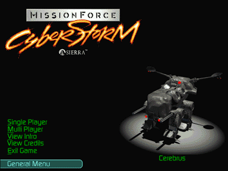

Bioderm – the Bioderms are similar to clones. The DNA sample they are cloned from is incorporated into a protoplasm to form a base genetic matrix (BGM). The DNA samples come from former human heroes. In the Bioderm Facility you may preview a catalogue of BGMs to create a Bioderm.
Bioderm Facility – this is an area of the Herc Base where you can create and administer to Bioderms; this is also where you train Bioderms and biomechanically link them to Hercs.
Biovat – the area inside the Bioderm Facility where Bioderms are created.
Communications – with each promotion, you receive communications from Unitech Command; these communications tell you something about the number and types of Hercs and Bioderms you are allowed to command, and any new technology available to you.
Cybrid – the enemy equivalent to the Herculan; Cybrids are currently manufactured in eight models: Specter, Parasite, Cerebrus, Arachnus, Genocite, Malignus, Hades, and Nihilus.
Genetic Stability – all Bioderm’s have a Genetic Stability rating which is a function of the way they were created; Bioderms start completely stable upon creation; Stability deteriorates as a Bioderm’s Herc takes hits during battle or as StimGland is administered; once Genetic Stability reaches half of its maximum, Skill Ratings begin to drop. Genetic Stability can be restored with the Stabilize option in the Medvat.
Herc – short for Herculan; the monolithic fighting machines employed by Unitech Command; currently, eight models are manufactured: Shadow, Remora, Sensei, Ogre, Giant, Demon, Reaper, and Juggernaut.
Herc Base – this is the main station from which you perform all inter-battle activities; from here, you can access the Bioderm Facility, Herc Bay, and the Herc Command Center; you also launch all missions from the Herc Base.
Herc Bay – this is the area of the Herc Base where you purchase and maintain your Hercs.
Herc Carrier – your transportation into any new mission and back to the Herc Base; you can also “hide” your Hercs here during battle (although once re-boarded, they cannot return to the battle).
Herc Command Center – this is the area of the Herc Base where you select your missions, observe your Career Status, or review previous Corporate Communications.
Jackup – a variety of the Stimgland meta-steroid that increases all percentages in a Bioderm’s Skill Ratings (except for Command) for a set number of turns; also adds to a Bioderm’s Toxin level.
Link – the area inside the Bioderm Facility where Bioderms are biomechanically linked to Hercs.
Medvat – the area inside the Bioderm Facility where you take Bioderms to regenerate their health, balance Genetic Stability, and detoxify them; this is also where they can be recycled.
Ore – valuable deposits of ore are found on most of the planets and moons in the Cyberstorm Universe; what makes ore so valuable is that it is not a naturally occurring mineral, but fossilized slag left behind by a technological civilization that disappeared millions of years ago; Ore is actually a complex mix of dozens of valuable heavy metals, rare elements, and most exciting, stable trans-uranic elements not found in nature, and beyond the reach of human technology.
Placidex – a variety of the Stimgland meta-steroid that rejuvenates a Bioderm’s Stability; also adds to a Bioderm’s Toxin level.
Stimgland – either of the two meta-steroids, Jackup or Placidex, that are administered in the Pilot Status area while out on a mission.
Toxins – these are introduced into Bioderms as Stimgland is administered; once Toxin levels reach the Bioderm’s tolerance threshold, Health begins to deteriorate; Toxins can be removed in the Medvat.
VREC – Virtual Reality Enhancement Center – the area inside the Bioderm Facility where Bioderms are trained to enhance all Skill Ratings: Piloting, Energy, Missile, Cannon, Plasma, ELF, Advanced Tech., and Command).